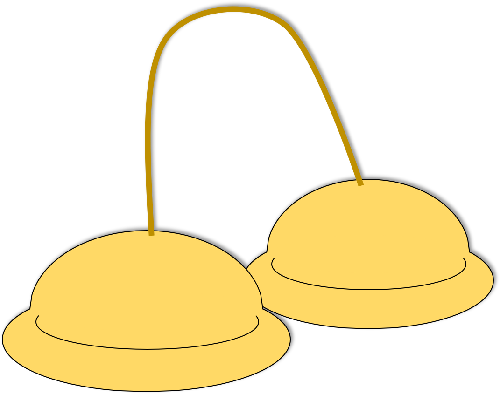

ดรมฟ Online
โปรแกรมพิมพ์โน้ตดนตรีไทย
♪ เลือกเพลงตัวอย่าง…
ตัวอย่างเปล่า
ลาวครวญ 2 ชั้น
ลาวพุงขาว 2 ชั้น
ลาวจ้อย สองชั้น
ลาวจ้อย ชั้นเดียว
ลาวล่องน่าน ชั้นเดียว
แขกบรเทศ ชั้นเดียว
ลาวเสี่ยงเทียน 2 ชั้น
แขกบรเทศ ชั้นเดียว [ฆ้องวงใหญ่]
ลา [ฆ้องวงใหญ่]
ลูกอม
สายตาหลอกกันไม่ได้
ตายทั้งเป็น
แก้มน้องนางนั้นแดงกว่าใคร
ทักครับ - Lipta
สาวสวนแตง
นิราศเวียงพิงค์
เล่น
หยุด
♩ =
−
+
เปิดไฟล์
บันทึกไฟล์
คัดลอก URL
ไฟล์
เครื่องมือแก้ไข
คีย์บอร์ดโน้ต
ประวัติ
แก้ไข
ตารางโน้ต
มุมมอง
ธีม
แบบอักษร
การตั้งค่า
ขนาดโน้ต
−
+
กลับไปหน้าพิมพ์โน้ต
แผ่นโน้ต
บรรทัดแรก: ชื่อเพลง (BPM) : · พิมพ์ตัวเลข 1–7 บน Numpad เพื่อแปลงเป็น ด ร ม ฟ ซ ล ท
คีย์บอร์ดโน้ต
แตะเพื่อฟังเสียง · เหลือง = ฟ / ท
สูง ํ
ดํ
รํ
มํ
ฟํ
ซํ
ลํ
ทํ
กลาง
ด
ร
ม
ฟ
ซ
ล
ท
ต่ำ ฺ
ดฺ
รฺ
มฺ
ฟฺ
ซฺ
ลฺ
ทฺ
-
--
---
----
สูง
ต่ำ
#
b
/
⎵ เว้นวรรค
↵ Enter
⌫ ลบ
✕
เปิดไฟล์โน้ต
อัปโหลดไฟล์โน้ตในรูปแบบ ดรมฟ Online นามสกุล .txt